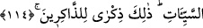

Fakir (Bursevî) der ki: İhyâ’da zikredildiğine göre dâvet edilmeden sultanın huzuruna
çıkan câhildir. Dâvet edilip de huzura çıkmayan ise ehl-i bid’attır.
Mes’elenin aslı şudur: Âyetteki meyil bütün muhataplarla ilgili bir durum iken; sultan
ile haşır-neşir olmak, kapılarına gitmek ve onlara payanda olmak, âlimler ve Kur’an
okuyucuları ile ilgili durumlardır. Bütün bu sayılanlar, âlimler tarafından olursa
mezmum olurlar. Ancak taleb sultanlar ve idâreciler cihetinden gelir ve kendilerinden
dînî açıdan faydalanmak için onlarla haşır-neşir olmayı istediklerinden buna mecbur
kalırlarsa bunda beis yoktur. Çünkü mecbur kalan ve talep edilen bir âlim Allah Teâlâ
tarafından desteklenir, nefsânî garazlardan âzâde olur. Ancak yine de nefsânî garazlarla
hareket ederse kendi nefsinin eline bırakılır ve -Allah korusun- şeytanlar onu tesirleri
altına alıverir.
114. Gündüzün iki ucunda ve gecenin gündüze yakın zamanlarında namaz kıl.
Çünkü iyilikler, kötülükleri giderir. Bu, öğüt almak isteyenlere bir hatırlatmadır.
“Gündüzün iki ucunda” yani sabah-akşam “ve gecenin gündüze yakın zamanlarında
namaz kıl.”
“Namaz kıl” emrinde olduğu gibi hayırlı işler emredilirken -emredilen şey mânâ
bakımından umûmî olsa da- zâhirde sadece Hz. Peygamber (s.a.)’e yöneltilmiştir. Oysa
mahzurlu bir şey yasaklanırken ümmet muhatap alınarak yasaklanır. Hitap Hz.
Peygamber’e tevcih edilmez. Bu, Kur’an’ın o yüce belâğatinin özelliklerindendir.
Namazı ikame etmek (ayakta tutmak) ile kastedilen, namazı edâ etmektir. Namazı edâ
etmenin ‘ikame’ kelimesiyle anlatılması, namazın dinin direği olduğuna işaret etmek
içindir.
Gündüzün ilk ucunda kılınan namazla kasdedilen, sabah namazıdır. Öteki ucunda
kılınan namazdan maksad ise öğle ve ikindi namazlarıdır. Çünkü güneşin tam tepede
oluş vaktinden sonra gündüzün öteki ucu başlamış olmaktadır. Gecenin gündüze yakın
vakitlerindeki namazlardan maksad da akşam ve yatsı namazlarıdır.
Şu halde bu âyet, beş vakit namazı ihtiva etmektedir. Kaf Suresindeki şu ifade de buna
benzemektedir. “Güneş’in doğuşundan önce de” yani sabah namazı ile “batışından
önce de” yani öğle ve ikindi namazları ile “Rabb’ini överek tesbih et.” Tefsîru’l-
Münâsebât’ta belirtildiği üzere güneşin batışından önceki vakitte aslolan ikindi namazı
olup öğle namazı buna tabidir. “Gecenin bir bölümünde”, yani akşam ve yatsı
namazları ile “O’nu tesbih et.” (Kaf, 50/39-40)
Bazı âlimler, gündüzün iki ucu ifadesini sabah ve akşam namazları olarak açıklarken